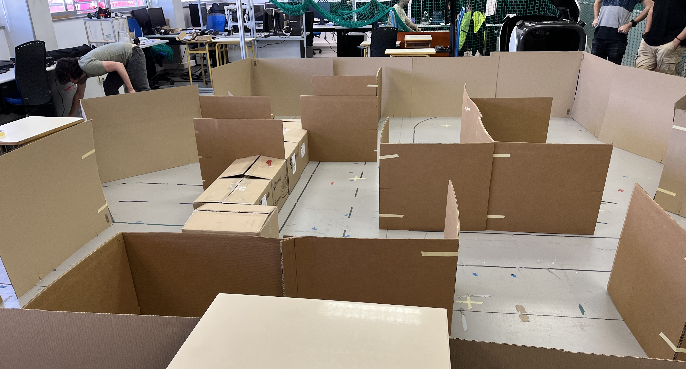
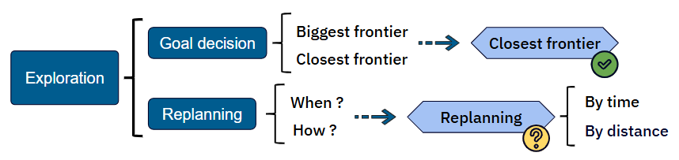
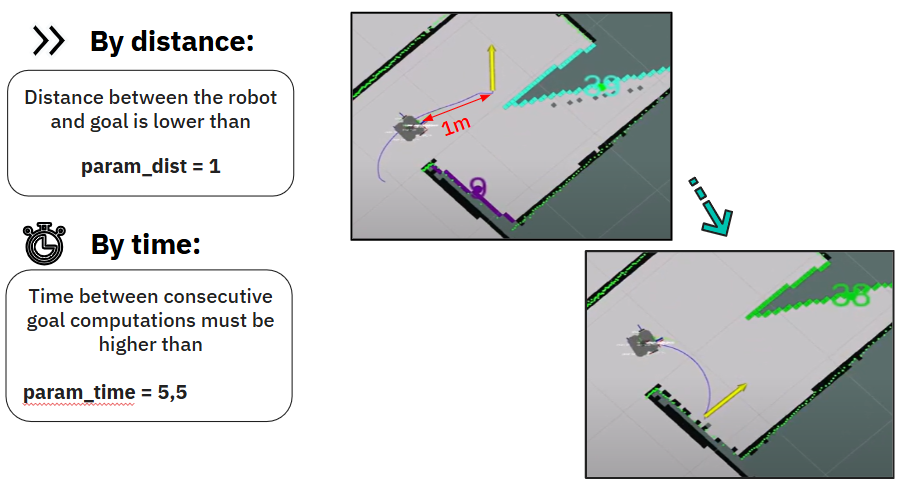
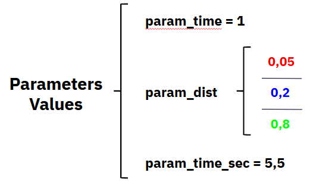
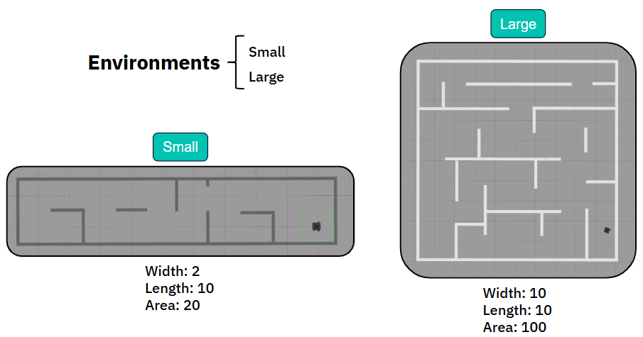
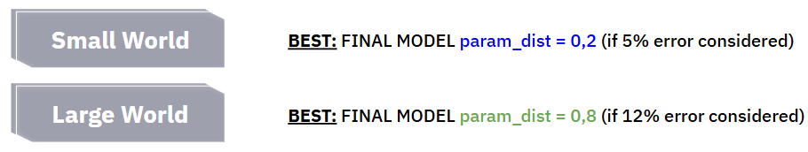

Autonomous Exploration in Robotics Using ROS
This project explores frontier-based exploration strategies for mobile robots using ROS. The goal is to improve decision-making in goal selection and replan strategies while focusing on exploration challenges rather than navigation issues.
Our research was mainly focused on two different directions: the goal selection (frontier) and the replan decision.
First, the decideGoal method determines the next exploration target by iterating through all available frontiers. It validates each frontier as a potential goal, calculates the path length to reach it, and selects the closest valid frontier. This method ensures efficient navigation but may face challenges in scenarios with clustered frontiers or when global coverage is prioritized.
The replan method evaluates whether the robot should compute a new goal based on specific criteria: elapsed time since the last goal, distance to the nearest frontier, or the distance between consecutive goals. Different cases combine these factors to adapt to diverse exploration needs, providing flexibility in goal selection and ensuring the robot remains productive in dynamic environments.
The interplay between replan strategies and goal selection is key. This project emphasizes the need for parameter tuning and experimental validation to identify the best combinations for different exploration scenarios. The following parameters have been considered.
Different scenarios have been considered with different initial positions.
Simulations were carried out by means of ROS and Gazebo simulator.
Leading to the following results.
Then, following conclusions can be taken from simulation experiments:
Finally, the robot was tested in a real scenario during a class competition. Our robot completed the maze exploration using 20.46 meters, achieving a more efficient performance compared to other teams, whose robots required 22.32 meters, 28.61 meters, 21.85 meters, and 28.47 meters, respectively.
You can check the source code on GitHub using the following link: GitHub Repository
Project Information
- Name: Autonomous Exploration in Robotics Using ROS
- Topic: Mobile Robotics
- Tools: C++, ROS
- Location: Barcelona (Spain)
- Date: May, 2023
- Source Code: GitHub Repository